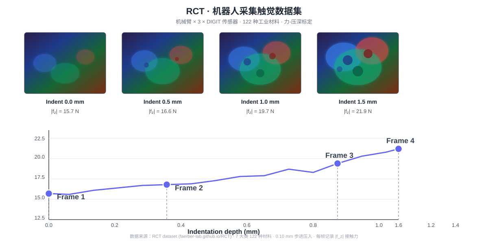
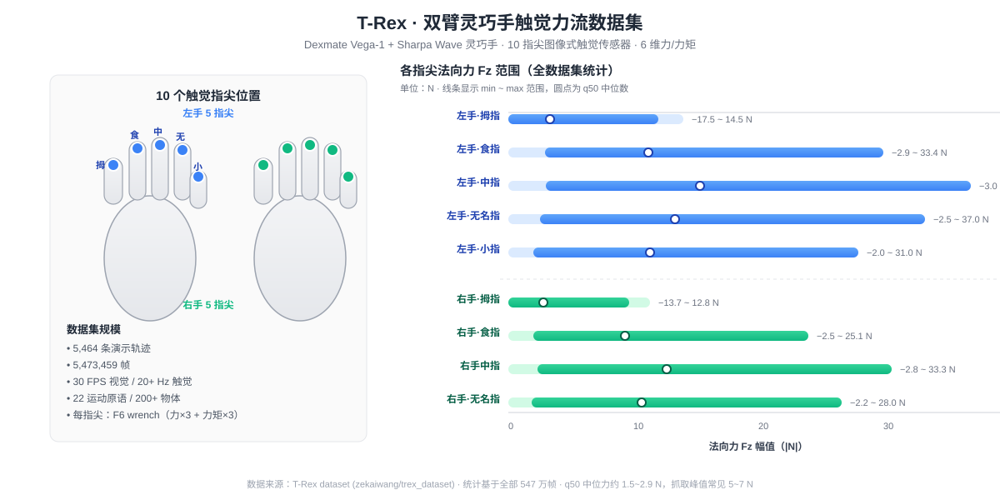
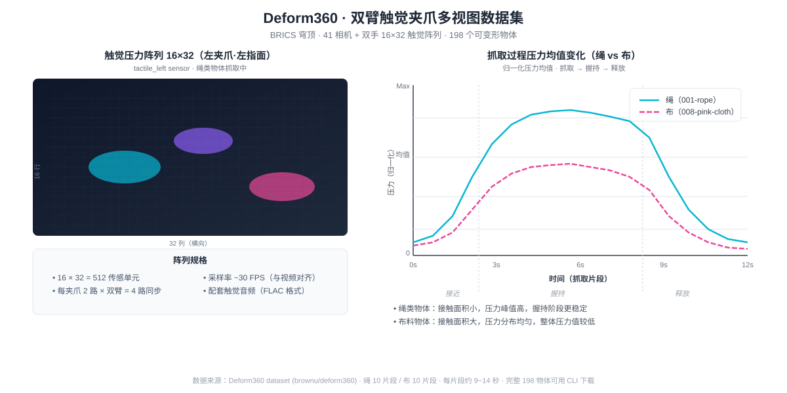
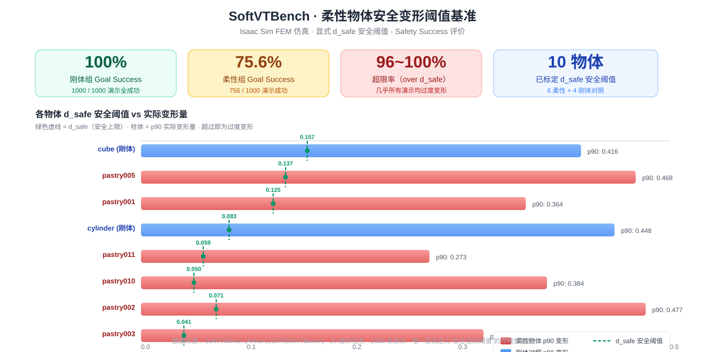
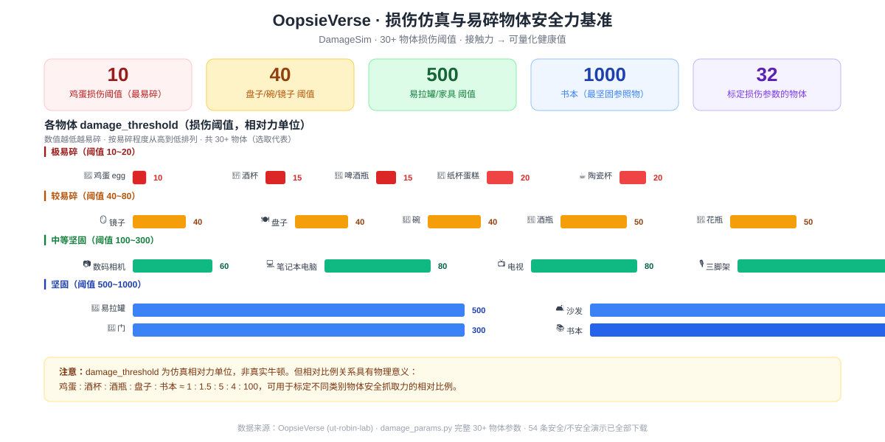
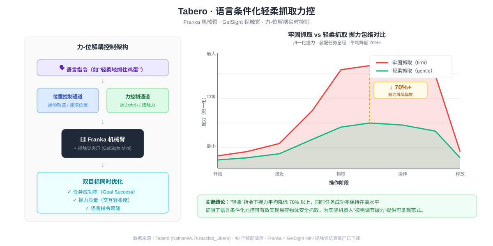

机械臂 × DIGIT 触觉传感器，4 个压入深度的接触图像与 |f_z| 力曲线示意。122 种工业材料，0.10 mm 步进标定。

双臂灵巧手 10 个触觉指尖的法向力 Fz 范围统计，左右手分列，含中位数与 min~max 全范围。

16×32 触觉阵列示意 + 绳/布两类柔性物体抓取过程压力均值时间序列对比（接近→握持→释放）。

10 个物体的 d_safe 安全阈值 vs p90 实际变形量对比。唯一显式定义"安全变形上限"的视触觉基准。

30+ 物体 damage_threshold 从鸡蛋(10)到书本(1000)的完整排行。4 个易碎等级，直观对比不同物体脆弱程度。

力-位解耦控制架构 + 牢固/轻柔两种模式下握力包络对比。轻柔模式握力平均降低 70%+。